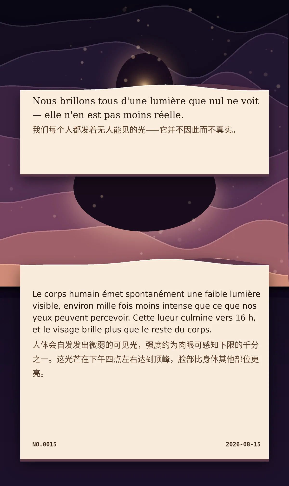

Nous brillons tous d'une lumière que nul ne voit — elle n'en est pas moins réelle.（我们每个人都发着无人能见的光——它并不因此而不真实。）
Le corps humain émet spontanément une faible lumière visible, environ mille fois moins intense que ce que nos yeux peuvent percevoir. Cette lueur culmine vers 16 h, et le visage brille plus que le reste du corps.（人体会自发发出微弱的可见光，强度约为肉眼可感知下限的千分之一。这光芒在下午四点左右达到顶峰，脸部比身体其他部位更亮。）